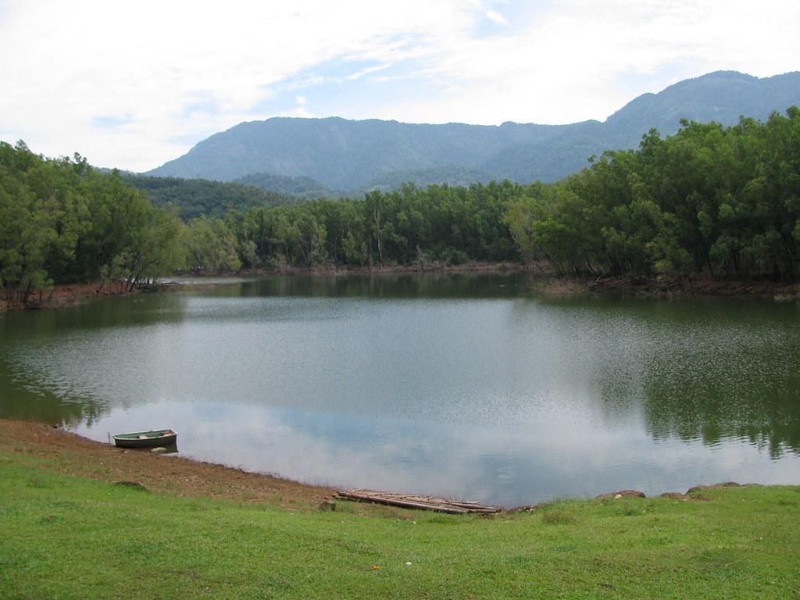

About Balussery
Balussery is a beautiful town about 25 km from Kozhikode city. Known for its cultural heritage and serene landscapes, it serves as the headquarters of Balussery Block Panchayat.
The town sits at an elevation of 42 meters and is home to ancient temples, green hills, and rich traditions that reflect Kerala’s rustic charm.
“Balussery, a land where history whispers through the hills and rivers, is truly a cultural treasure of North Kerala.”
Tourist Attractions
Balussery Fort & Vettakkorumakan Temple

Historic Balussery Fort and Vettakkorumakan Temple
The Balussery Fort (Balussery-Kotta) was once the seat of the Kurumbranad Rajas. Near the fort lies the Vettakkorumakan Temple, dedicated to the warrior deity of Kerala. Learn more.
Vayalada Hill Station

Panoramic views from Vayalada Hills
Known as the "Gavi of Malabar", Vayalada offers stunning hilltop views, lush greenery, and peaceful vibes perfect for a short getaway.
Thonikadavu (Switzerland of Kerala)
Misty meadows of Thonikadavu
Thonikadavu is famous for its calm and cool atmosphere. Locals call it the “Switzerland of Kerala” for its misty charm and scenic beauty.
Kakkayam Dam & Power Station

The beautiful Kakkayam Dam area
Just 19 km away from Balussery, Kakkayam Dam is a perfect destination for nature lovers, offering boating and trekking trails amidst forests.
Popular Food Spots
Hotel Rahmath

Authentic Malabar cuisine at Hotel Rahmath
Famous for its delicious biryanis and Kerala-style meals, Hotel Rahmath is a must-visit for anyone who loves traditional Malabar flavors.
Café Green Valley

Perfect spot for evening tea and snacks
A cozy café surrounded by greenery, offering tea, snacks, and a calm ambiance to unwind with friends or family.
Kottaram Tea Stall

Local hangout near Balussery Fort
This small tea stall near the fort is a favorite among locals, serving hot chai, crispy banana fritters, and a taste of Kerala’s warmth.
Gallery

View of Balussery from the hilltop

Vaikundam Vishnu Temple, Balussery